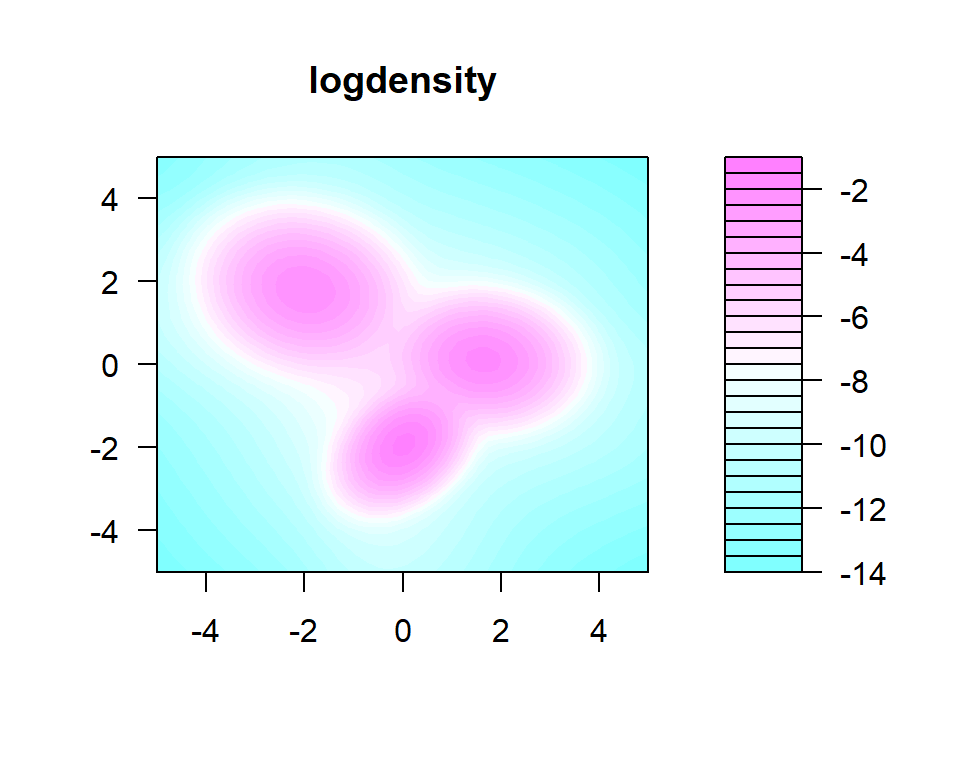
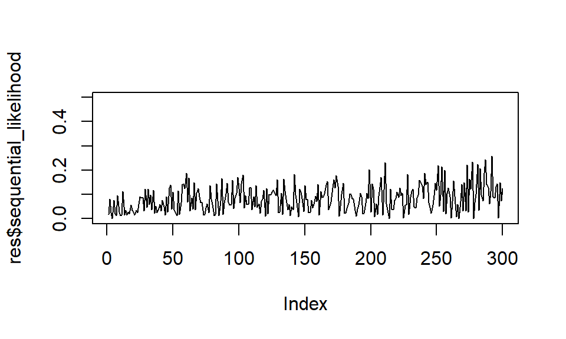

intro.RmdWe’ll show how to use the package in a static form (no dynamic component).
Here’s some fake data.
set.seed(999999)
library(mvtnorm)
library(pldensity)d <- 2
n <- 300
w_true <- c(0.3, 0.1, 0.21)
mu_true <- matrix(c(-2, 2, 0, -2, 1.5, 0), ncol = 2, byrow = TRUE)
sigma2_true <- 0.35
simdata <- matrix(0, n, d)
simdata[1:100, ] <- rmvnorm(100, mu_true[1, ], diag(sigma2_true, d))
simdata[101:200, ] <- rmvnorm(100, mu_true[2, ], 0.5 * diag(sigma2_true, d))
simdata[201:300, ] <- rmvnorm(100, mu_true[3, ], diag(sigma2_true, d))
ground_truth <- c(rep(1, 100), rep(2, 100), rep(3, 100))plot(simdata, pch = 21, bg = ground_truth, main = "simulated bidimensional data")nparticles = 500
mod0 <- ddpn_init(
nparticles = nparticles,
lambda = c(0, 0),
kappa = 1,
nu = 3,
Omega = diag(2),
alpha = 2,
rho = 0.9)resol <- 50
x = seq(-5, 5, length.out = resol)
y = seq(-5, 5, length.out = resol)
grid <- data.matrix(expand.grid(x, y))
dens <- ddpn_eval(res$updated_model, grid, nparticles = nparticles)z <- matrix(dens, ncol = resol)filled.contour(x = x, y = y, z = log(z), nlevels = 20, main = "logdensity")
contour(x = x, y = y, z = log(z), nlevels = 10, main = "density fit")
points(simdata, pch = 21, bg = ground_truth)sum(dens) * (x[2] - x[1]) * (y[2] - y[1])
#> [1] 0.9995125res$marginal_loglikelihood
#> [1] -840.0715plot(res$sequential_likelihood, type = "l", ylim = c(0, .5))